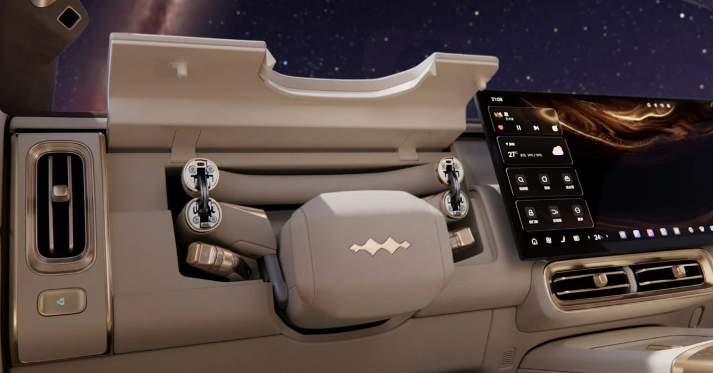

for DC Advanced UX Team.Vivi · Yohan · Libby · Lim Jisu · Katey · Anna
Back Issue

Cockpit
Tai 9: the wheel folds into a tray
On the Fang Cheng Bao Tai 9, the wheel swings 180 degrees on a hidden hinge and drops into the dash in about 10 seconds. A panel closes over it. A tray folds out where the rim was. Only the airbag stays outside. It folds only when parked, next to a seat that reclines to 165 degrees. On the road it is a D-shaped wheel with a full rim and physical buttons, not a yoke. There is no column to the front wheels. Steer-by-wire is what lets the rim leave. The hinge is rated for 80,000 cycles, on the top trim only.
팡청바오 Tai 9의 스티어링 휠은 숨은 힌지로 180도 돌아가 약 10초 만에 대시보드 안으로 들어간다. 덮개가 닫히고, 림이 있던 자리에 트레이가 펼쳐진다. 에어백만 밖에 남는다. 주차 중에만 접히고, 운전석 등받이는 165도까지 눕는다. 주행 중에는 테두리가 있는 D형 휠이고, 물리 버튼이 있다. 요크가 아니다. 접을 수 있는 이유는 스티어 바이 와이어다. 앞바퀴로 이어지는 컬럼이 없다. 힌지는 8만 회를 견디도록 잡았고, 최상위 트림에만 들어간다.
In GTA 6 the phone is an object in the room, not a menu over the minimap. Open it and the view drops to first person. Jason or Lucia can still walk, or drive, while reading a text or a fake Instagram. A texted link opens the news app. A texted pin drops onto the GPS. After a heist, a friend can send the story and ask if it was you. At night they sit on the bed and scroll before sleep. Each phone holds a bank, a rideshare, fitness, a social feed, and a scanner that rates nearby cars.
GTA 6의 전화기는 미니맵 위의 메뉴가 아니라 방 안의 물건이다. 열면 시점이 1인칭으로 내려간다. 제이슨이나 루시아는 문자를 읽거나 가짜 인스타그램을 넘기면서도 걷거나 운전할 수 있다. 문자 속 링크는 뉴스 앱을 열고, 문자로 온 핀은 GPS에 떨어진다. 강도 뒤에 친구가 기사를 보내며 너냐고 묻는다. 밤에는 잠들기 전에 침대에 앉아 스크롤한다. 인물마다 전화기가 있다. 은행, 호출, 운동, 소셜, 그리고 근처 차를 훔치기 쉬운지 매기는 사이드로드 스캐너다.
At the LA Auto Show, the new Elantra puts a 12.9-inch Pleos Connect screen in the centre and leaves the essentials on physical buttons. A slim display sits in the driver's line of sight, up by the glass, and the wheel spokes carry physical keys. Korea, and the top hybrid in Canada, can take 14.6 inches instead. Pleos is Android Automotive, with an app market. Gleo takes a spoken ask, a trailhead with parking half an hour away, and skips the menu. Wide glass, and a row of keys still in reach.
LA 오토쇼의 새 엘란트라는 가운데 12.9인치 Pleos Connect를 두고, 자주 쓰는 조작은 물리 버튼에 남긴다. 가느다란 화면은 시선 위, 유리 쪽에 있고 스포크에도 물리 키가 있다. 한국과 캐나다 최상위 하이브리드는 14.6인치다. Pleos는 Android Automotive이고 앱 마켓이 있다. Gleo는 말로 묻는다. 30분 거리, 주차되는 입구. 메뉴는 없다. 미국 첫 Pleos 캐빈이다.
Catherine Lepage drew Dancing on Osees entirely on paper, to Together Tomorrow by the Los Angeles band Osees. The minute and a half is a run of dance cycles: eccentric bodies, caricatures, marker lines that never get cleaned into vectors. She made it herself at Ping Pong Ping, the Montreal studio she runs with Simon Rivest. Her National Film Board films include The Great Malaise and Ultra Strong. STASH put it up on 19 November, and Vimeo Staff Picks picked the same film. The motion is the pencil, not a rig.
Catherine Lepage把《Dancing on Osees》整支画在纸上，配Osees的Together Tomorrow。一分半是舞蹈循环：古怪的身体、马克笔的线，没有收成矢量。她在蒙特利尔的Ping Pong Ping自己做，和Simon Rivest一起开。国家电影局的片子有The Great Malaise。STASH于11月19日放出。动的是铅笔，不是绑定。
카트린 르파주는 Dancing on Osees를 전부 종이에 그렸다. 음악은 Osees의 Together Tomorrow다. 1분 30초는 춤의 반복이다. 괴상한 몸, 벡터로 닦지 않은 마커 선. 몬트리올 Ping Pong Ping에서 혼자 만들었다. 시몽 리베스트와 연 작업실이다. 국립영화위원회 작품으로 The Great Malaise와 Ultra Strong이 있다. STASH가 11월 19일에 올렸고 비메오 스태프 픽도 골랐다. 모션은 연필이다.
Dev Mode now takes the Figma agent. Prompt it on a frame and it inspects the design, compares versions, and returns a code snippet. It also hands back links that download the assets in a batch, instead of exporting one layer at a time. The note went up on 19 November, next to the image tool that already makes two, four, or six pictures from one prompt. The agent is reading the file the way a developer does: what changed, what to copy, what to pull out.
Dev Mode现在能叫Figma的代理。对着一个画框提问，它会检查设计、对比版本，并给出一段代码。它还会返回批量下载素材的链接，不用一层一层导出。这条说明在11月19日上线，旁边是已经能用一次提示生成两张、四张或六张图的工具。代理读文件的方式和开发者一样：改了什么，复制什么，拉出什么。
Dev Mode에서 Figma 에이전트를 부를 수 있다. 프레임을 두고 물으면 디자인을 살펴보고, 버전을 비교하고, 코드 조각을 돌려준다. 레이어를 하나씩 뽑지 않고, 에셋을 묶음으로 받는 다운로드 링크도 준다. 노트는 11월 19일에 올라왔다. 옆에는 한 프롬프트로 두 장, 네 장, 여섯 장을 만드는 이미지 도구가 이미 있다. 에이전트는 개발자처럼 파일을 읽는다. 무엇이 바뀌었는지, 무엇을 복사할지, 무엇을 꺼낼지.
Turner Duckworth pressed the new Maker's Mark marks in the red wax that still coats every bottle by hand. Soft red winter wheat, rings of American oak, and plants from Star Hill Farm in Loretto went into the wax and came out as the marks. The 2021 system drew the drip. This one uses the material. Type follows Margie Samuels, who set the bottle, the label, and the dip. The platform is called Perfectly Unreasonable. It started on 17 November and runs through retail and posters into 2027.
Turner Duckworth把Maker's Mark的新标志压进仍由手工蘸上的红蜡。软红冬小麦、美洲橡木年轮，以及Loretto的Star Hill Farm上的植物，进了蜡，出来成了标志。2021年是把蜡滴画出来。这一次用材料本身。字体跟着Margie Samuels的手写，瓶子、标签和蘸蜡都是她定的。平台叫Perfectly Unreasonable，11月17日起铺到零售和海报。
터너 덕워스는 Maker's Mark의 새 마크를, 아직도 손으로 병에 입히는 붉은 왁스에 눌렀다. 붉은 겨울 밀, 미국산 오크 나이테, 로레토 Star Hill Farm의 식물이 왁스에서 마크로 나왔다. 2021년은 왁스 방울을 그렸다. 이번엔 재료다. 글자는 병과 라벨과 디핑을 정한 마지 새뮤얼스의 손글씨다. 이름은 Perfectly Unreasonable. 11월 17일부터 매장과 포스터로 깔린다.
Photoshop beta adds Camera Angles as its own layer. Layer, New Camera Angles Layer, then one of six presets: high angle, low angle, close-up, wide shot, centered reframe, level horizon. Generate writes a new layer and leaves the original where it was. The result is a new view of the same picture, so faces and the room around them can shift. It spends generative credits. The control is a camera move, not a prompt box: six named angles, then a look at what the picture became.
포토샵 베타의 Camera Angles는 자체 레이어다. 레이어 메뉴에서 새 Camera Angles 레이어를 고른 뒤, 여섯 프리셋 중 하나를 쓴다. 하이 앵글, 로 앵글, 클로즈업, 와이드, 가운데 재구성, 수평 맞추기. 생성하면 새 레이어가 생기고 원본은 그대로다. 같은 사진의 다른 시점이라, 얼굴과 주변 방이 움직일 수 있다. 생성 크레딧을 쓴다. 조작은 프롬프트 칸이 아니라 카메라 이동이다. 이름이 있는 각도 여섯 개, 그리고 사진이 어떻게 바뀌었는지.
Google's homepage, long a single search bar, now opens a sidebar of AI Mode threads. A gray bar on the left expands into the list: past chats, a new thread, search across threads, and a link to a Gemini Notebook. It is rolling out on desktop, worldwide. The AI Mode button has sat in the bar since last year. This puts the unfinished threads beside the box, so a question that is not one-and-done stays on the same page. The homepage is becoming a list of conversations, not only a field.
오래도록 검색창 하나였던 구글 첫 화면이, 이제 AI Mode 스레드의 사이드바를 연다. 왼쪽 회색 막대를 펼치면 지난 대화, 새 스레드, 스레드 검색, Gemini Notebook 연결이 나온다. 데스크톱에서 전 세계로 깔린다. AI Mode 버튼은 작년부터 검색창에 있었다. 이번엔 끝나지 않은 대화를 상자 옆에 둔다. 한 번에 끝나지 않는 질문이 같은 페이지에 남는다. 첫 화면이 입력칸만이 아니라 대화 목록이 된다.
Leaked photos of the Motorola Razr Flex show a book-style fold, open and partly shut, in coriander brown and a dark green called botanical garden. The brown back is bumpy, leather-like. The green reads as woven cloth. The cover screen's hole-punch camera sits in the centre of the top edge. Inside, the camera is in the upper right. The back is a pill: two cameras and a flash. It is cast as a smaller sibling to the Galaxy Z Fold 8, cover 5.5 inches, open screen 7.6. The Flex's own sizes are not in the leak.
摩托罗拉Razr Flex的流出照片里，书本式折叠有全开和半折，颜色是芫荽棕和叫botanical garden的深绿。棕色背面像带颗粒的皮，绿色像织物。外屏挖孔在顶边正中，内屏摄像头在右上角。背面一条胶囊：两颗摄像头加闪光灯。它被放成Galaxy Z Fold 8更小的兄弟，后者外屏5.5英寸、展开7.6英寸。Flex自己的尺寸不在这批图里。
유출된 모토로라 Razr Flex는 북 스타일 폴더블이 펼쳐진 상태와 반쯤 접힌 상태다. 색은 고수 브라운과 botanical garden이라는 짙은 초록. 갈색 뒷면은 울퉁불퉁한 가죽, 초록은 직물처럼 보인다. 커버의 펀치홀은 위쪽 한가운데, 안쪽 카메라는 오른쪽 위다. 뒷면은 카메라 두 개와 플래시의 알약 막대다. 갤럭시 Z Fold 8보다 작은 동생으로, Fold 8 커버는 5.5인치, 펼치면 7.6인치다. Flex 크기는 유출에 없다.
&Walsh kept Insomnia Cookies' moon and swapped the drawing for a photograph: a melted chocolate-chunk cookie, bitten into a crescent. A vector waits for small sizes. Type by Julio Zukerman is rounded and chunky. The palette is late-night purple and cookie-dough brown. The line is Always Warm. The box stays pizza-style. Most launches share one warm photo. A few go graphic. The photo is the promise, with a drawn fallback when the crumb will not print.
&Walsh는 Insomnia Cookies의 달을 남기고 그림을 사진으로 바꿨다. 녹은 초콜릿 청크 쿠키를 초승달로 베어 문 것이다. 작은 크기용 벡터는 따로 둔다. 훌리오 주커만의 글자는 둥글고 두툼하다. 색은 늦은 밤의 보라와 반죽 갈색. 문장은 Always Warm. 상자는 피자 박스 그대로다. 사진이 약속이고, 부스러기가 안 찍힐 때를 위해 그린 버전이 있다.
Nika Belskaya, working in Tbilisi as Vivid Cereal, builds posters, type, and photos by grafting archival and public-domain pictures onto one another, then adding her own mark. An Empires Collapse T-shirt was for a pop-up at the club Left Bank. Of Soil & Smoke, a documentary cookbook about Georgia, took her art direction, icons, and photography, plus candles, shirts, and prints. Logotypes come from whatever she is into: childhood toys, mycology, physics. The pages look assembled, not styled from a single grid.
트빌리시의 니카 벨스카야는 Vivid Cereal로, 아카이브와 퍼블릭 도메인 그림을 접붙여 포스터와 글자와 사진을 만들고 그 위에 자기 자국을 올린다. Empires Collapse 티셔츠는 클럽 Left Bank 팝업용이었다. 조지아 요리책 Of Soil & Smoke에는 아트 디렉션, 아이콘, 사진이 들어갔고 캔들과 프린트도 있다. 로고는 장난감, 균류학, 물리에서 온다. 한 그리드가 아니라 조립이다.
Julie Legrand draws what is on the kitchen table: a moka pot in a wobbly black line, a yellow coffee pot on brown, a hand holding a shell among crabs, a rose with ROSA underneath. She stays on one object for months, through photos, collage, pens, and lettering templates, then scans and does not clean the scan. Hole-punch dots sit at the edges. Brown is the colour she keeps. Two recent collages, a stem of bell flowers and a cream rose, are both on brown. A screen-printed book with Le Raclet in Berlin is next.
줄리 르그랑은 부엌 식탁 위를 그린다. 흔들리는 검은 선의 모카포트, 갈색 위의 노란 커피포트, 게들 사이에서 조개를 쥔 손, 아래에 ROSA라고 쓴 장미. 한 사물을 몇 달씩 붙잡고, 사진과 콜라주와 펜을 거친 뒤 스캔을 닦지 않는다. 펀치 점이 가장자리에 앉는다. 갈색을 남긴다. 최근 콜라주는 초롱꽃과 크림 장미이고, 둘 다 갈색 위다. 다음은 베를린 Le Raclet과의 실크스크린 책이다.
Will Wright's MyMems, from Gallium Studios, turns a spoken memory into a piece of a map. Say a short story into the phone and it becomes a place, an object, or a person you can set down. Characters run on Artificial Agency's Behavior Engine. A local model, memDNA, learns only with permission. You start in a Guide's world, merge pieces to solve puzzles, then open a world of your own. It can stay private, or open to family. The target is a community build in 2027. The screen is a scrapbook you can walk through.
Will Wright的MyMems来自Gallium Studios，把说出来的记忆变成地图上的一块。对着手机讲一个短故事，它变成地方、东西，或一个可以放下的人。角色跑在Artificial Agency的Behavior Engine上，本地模型memDNA只在允许时学习。先在向导的世界里合并碎片解谜，再打开自己的世界。可以私密，也可以对家人打开。目标是2027年。界面是可以走进去的剪贴簿。
윌 라이트의 MyMems는 Gallium Studios 게임이다. 말로 한 기억이 지도의 조각이 된다. 전화기에 짧은 이야기를 하면 장소, 사물, 혹은 내려놓을 사람이 된다. 인물은 Artificial Agency의 Behavior Engine 위에서 움직이고, 로컬 모델 memDNA는 허락할 때만 학습한다. 가이드의 세계에서 조각을 합쳐 퍼즐을 풀고, 자기 세계를 연다. 비공개거나 가족에게 연다. 목표는 2027년이다. 화면은 걸어 들어가는 스크랩북이다.
The Leica M-A Hammertone and M11-P Hammertone wear a gray skin that looks hammered and is paint. Metal pigment shifts as it dries, so each brass top and base plate comes out slightly different. Wetzlar watches the coat. Under it: black vulcanite-style leatherette, and silver controls with a cross-knurl. The M-A is fully mechanical. No battery, no screen, no meter. The ISO dial on the back is a reminder, not a setting. The M11-P adds rounded edges, a silver front screw, 256GB, and 60, 36, or 18 megapixels.
라이카 M-A Hammertone과 M11-P Hammertone의 회색 껍질은 망치질처럼 보이지만 페인트다. 금속 안료가 마르며 장력을 바꿔, 황동 상판과 하판이 조금씩 다르다. 베츨라르가 그 막을 본다. 아래는 검은 벌카나이트풍 레더렛, 은색 조작부에는 교차 널링이 있다. M-A는 완전 기계식이다. 배터리도 화면도 노출계도 없다. 뒷면 ISO 다이얼은 메모다. M11-P는 둥근 모서리, 은색 나사, 256GB, 6000만·3600만·1800만 화소를 더한다.
Huawei's OSTA O1 Pro spreads sideways in a slab, with no hinge. The China listing, ahead of a 20 November launch, shows a purple body, 16GB of memory, and 512GB or 1TB. It is described as a HarmonyOS AI phone, with a star-shaped character on the screen. Processor, battery, and cameras are not in the listing. The shape is the interface problem: years of phones grew taller, and this one grew wider. An app that keeps its narrow column will leave empty bands on either side of the glass.
화웨이 OSTA O1 Pro는 힌지 없이 한 장의 슬래브에서 옆으로 퍼진다. 11월 20일 출시 앞의 중국 예약 페이지는 보라색 본체, 16GB, 512GB 또는 1TB를 보여 준다. HarmonyOS AI 폰이고, 화면에 별 모양 캐릭터가 있다. 프로세서와 배터리는 그 페이지에 없다. 몇 년 동안 전화기는 위로 길어졌고, 이 기기는 옆으로 넓어졌다. 좁은 단을 유지하는 앱은 유리 양옆에 빈 띠를 남긴다.
Pentagram redrew Alpha Bank's stater, the ancient coin in the mark, and pulled the symbol off the wordmark. The coin is thinner and longer. The name is less formal and still reads as a bank. Alpha Sans, with Tom Baber, has five weights and does the posters. Alpha Text is the small size. Colour stays on Alpha Blue, then white, Galazio Blue, Thalassi Turquoise, Heritage Pink, and Alpha Gold, plus five brights for charts. The coin is the picture. The name sits beside it.
펜타그램은 알파 뱅크의 스타테르, 마크 안의 고대 동전을 다시 그리고 심벌을 워드마크에서 떼었다. 동전은 더 얇고 길다. 이름은 덜 격식 있고 그래도 은행으로 읽힌다. 톰 베이버와 그린 Alpha Sans는 다섯 굵기이고 포스터를 맡는다. Alpha Text는 작은 크기용이다. 색은 Alpha Blue에 흰색, Galazio Blue, Thalassi Turquoise, Alpha Gold를 더한다. 동전이 그림이고 이름은 옆에 앉는다.